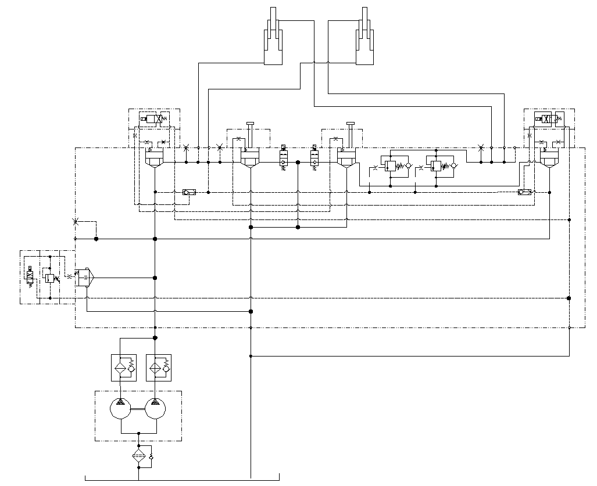

举升管路安装 · DUMP LINES MOUNTING
Описание системы подъема
Общие сведения
Если не указано иное, номера позиций в скобках совпадают с номерами позиций на рис. 1.
В состав системы подъема входят следующие компоненты:
1. Гидробак (1) - он устанавливается на кронштейне между передними и задними колесами с внешней стороны левого лонжерона рамы, предназначен для обеспечения системы подъема гидравлическим маслом.
2. Насос подъема (2) - он устанавливается в задней части вывода генератора, служит для передачи кинетической энергии через приводной вал, соединяется с рамой через кронштейн насоса, насос подъема представляет собой сдвоенный лопастный насос, предназначен для передачи кинетической энергии к системе подъема.
3. Фильтр высокого давления (3) - он устанавливается на кронштейне фильтра перед гидробаком с внутренней стороны левого лонжерона рамы: система подъема оснащена 2 фильтрами высокого давления, отфильтрованное масло под высоким давлением сливается с помощью блока слияния.
4. Блок клапанов управления подъемом (4) – он устанавливается позади гидробака с внутренней стороны левого лонжерона рамы, предназначен для осуществления управления подъемом, опусканием, удержанием, плавающим режимом кузова.
5. Гидроцилиндры подъема (5) - они устанавливаются с внешней стороны лонжерона рамы по одной штуке с каждой стороны.
Управление
Система подъема предназначена для осуществления управления подъемом, опусканием, плавающим режимом, удержанием кузова.
Подъем
Подъем кузова: водитель должен переместить рычаг управления подъемом в положение «Подъем» и удерживать в этом положении, при этом от рычага управления подъемом выдаются электрические сигналы, предназначенные для осуществления функции подъема кузов с помощью блока клапанов управления подъемом (4) и многоходового блока клапанов управления поворотом. Более подробная информация о рычаге управления подъемом приведена в соответствующих разделах части «Электрическая система».
Действия в положении «Подъем»:
1. Гидравлическое масло из насоса подъема (2) проходит через фильтр высокого давления (3), затем сливается и поступает на вход блока клапанов управления подъемом (4), в этот момент электромагнитный предохранительный клапан (4.1) в блоке клапанов управления подъемом (4) подключается [довести давление открытия до 2400 фунтов/кв. дюйм (16500 кПа)].
2. Масло под высоким давлением из насоса подъема (2) входит во вставной клапан подъема (4.2), в этот момент электромагнит вставного клапана подъема (4.2) тоже подключается, гидравлическое масло проходит через основной золотник вставного клапана подъема (4.2) и входит в перепускное отверстие гидроцилиндра подъема (5), при этом кузов начинает подниматься.
3. В процессе подъема кузова масло под низким давлением из нагнетательной полости гидроцилиндра подъема (5) проходит через основной золотник вставного перепускного клапана подъема (4.4), блок клапанов управления подъемом и возвращается в гидробак (1).
4. Установочное давление открытия вставного перепускного клапана подъема (4.4) составляет 1400 фунтов/кв. дюйм (10000 кПа), когда поднятый кузов переходит за балансировочное положение, данное давление позволяет постоянно держать перепускаемое масло под определенным давлением во избежание попадания воздуха вследствие чрезмерно быстрого выдвижения штока гидроцилиндра подъема, чтобы осуществлять управление скоростью выдвижения штока гидроцилиндр подъема.
Примечание:
1. Несмотря на то, что сам кузов не переходит за балансировочное положение, но карьерный самосвал все-таки имеет ряд функций защиты от перехода за балансировочное положение. Поскольку груз в кузове перемещается назад в процессе подъема кузова, появляется явление «переход за балансировочное положение», как будто кузов переходит за балансировочное положение.
2. При подъеме кузова отключается подача гидравлического масла в гидравлическую систему охлаждения.
Удержание
Для ограничения перемещения (подъема или опускания) кузова, оператор должен переместить рычаг управления подъемом в положение «Удержание».
Действие в положении «Удержание»:
От рычага управления подъемом не выдаются электрические сигналы, в этот момент все электромагниты в блоке клапанов управления подъемом (4) отключаются, основные золотники вставного клапана подъема (4.2), вставного клапана опускания (4.3), вставного перепускного клапана подъема (4.4), вставного перепускного клапана опускания (4.5) находятся в закрытом состоянии, гидравлическое масло из насоса подъема (2) проходит через основной золотник электромагнитного предохранительного клапана(4.1) и возвращается в гидробак (1).
ПРИМЕЧАНИЕ: Когда рычаг управления подъемом находится в положении «Удержание», если температура гидравлического масла достигает значения, установленного датчиком, то гидравлическое масло из гидравлического радиатора возвращается в гидробак.
Опускание
Опускание кузова: оператор должен переместить рычаг управления подъемом в положение «Опускание» и удерживать в этом положении, от рычага управления подъемом выдаются электрические сигналы, предназначенные для управления соответствующими электромагнитами в блоке клапанов управления подъемом (4), таким образом осуществляется функция опускания кузова. Более подробная информация о рычаге управления подъемом приведена в соответствующих разделах части «Электрическая система».
Действия в положении «Опускание»:
1. Гидравлическое масло из насоса подъема (2) проходит через фильтр высокого давления (3), затем сливается и поступает на вход блока клапанов управления подъемом (4), в этот момент электромагнитный предохранительный клапан (4.1) в блоке клапанов управления подъемом (4) подключается [довести давление открытия до 2400 фунтов/кв. дюйм (16500 кПа)].
2. Масло под высоким давлением из насоса подъема (2) входит во вставной клапан опускания (4.3), в этот момент электромагнит вставного клапана опускания (4.3) тоже подключается, гидравлическое масло через основной золотник вставного клапана опускания (4.3) и входит в перепускное отверстие гидроцилиндра подъема (5), кузов начинает опускаться под действием динамических сил.
3. В процессе опускания кузова масло под низким давлением из всасывающей полости гидроцилиндра подъема (5) проходит через основной золотник вставного перепускного клапана опускания(4.5), блок клапанов управления подъемом и возвращается в гидробак (1).
Примечание:
1. Когда кузов опускается примерно на половину хода, отпустить рычаг управления подъемом и педаль акселератор, нажать на кнопку на рычаге управления подъемом, при этом рычаг управления подъемом переходит в плавающий режим автоматически, кузов продолжает опускаться на раму.
2. При опускании кузова отключается подача гидравлического масла в гидравлическую систему охлаждения.
Плавающий режим
В момент полного соприкосновения кузова с рамой система подъема переходит в плавающий режим автоматически. При этом масло из насоса подъема (2) проходит через электромагнитный предохранительный клапан (4.1) в блоке клапанов управления подъемом (4) и непосредственно возвращается в гидробак; в то же время электромагнитные клапаны плавающего режима (4.6 и 4.7) в блоке клапанов управления подъемом (4) подключаются, присоединить перепускное отверстие гидроцилиндра подъема (5) к гидробаку (1) во избежание интенсивного перемещения гидроцилиндра подъема (5) вслед за перемещением кузова вверх-вниз в процессе транспортирования.
В случае невозможности опускания поднятого кузова вследствие неисправности системы подъема, можно осуществлять опускание кузова в плавающем режиме путем нажатии кнопки принудительного включения плавающего режима на рычаге управления подъемом. Более подробная информация о рычаге управления подъемом приведена в соответствующих разделах части «Электрическая система».
ВАЖНОЕ ПРИМЕЧАНИЕ: Рычаг управления подъемом и блок клапанов управления подъемом должны находиться в плавающем положении в процессе работы карьерного самосвал.
Техническое обслуживание и осмотр
Периодическое техническое обслуживание должно включать следующие виды работ:
1. Проверить все шланги и трубопроводы на наличие повреждений или утечек. Все шланги должны быть прочно зафиксированы и затянуты заданным моментом, указанным в части «Дополнения». В случае обнаружения повреждений или утечек, отремонтировать или заменить в соответствии с установленными требованиями.
2. Проверить компоненты сборочной единицы на наличие износа, повреждений или утечек.
3. Проводить испытания на работоспособность системы в соответствии с порядком проведения функциональных испытаний.
Функциональные испытания
Функциональные испытания системы производятся в следующем порядке:
1. Остановить автомобиль в безопасном месте, включить стояночный тормоз, подложить клинья под колеса во избежание случайного перемещения автомобиля.
2. Выключить двигатель и полностью сбросить остаточное давление в системе, убедиться в нахождении рычага управления подъемом в нейтральном положении, полном соприкосновении кузова с рамой.
3. Убедиться в правильном прохождении испытаний и регулирования системы рулевого управления. Более подробная информация приведена в соответствующих разделах части - «Система рулевого управления».
4. Проверить все шланги и штуцеры, затянуть их в соответствии с порядком, указанным в части «Дополнения».
5. Убедиться в применении указанного гидравлического масла и правильном уровне масла в гидробаке (1) карьерного самосвала. Обратитесь к информации по уровню масла в гидробаке.
6. Если карьерный самосвал долго стоит без движения с момента последнего запуска, вероятно, что было полностью слито гидравлическое масло из насоса рулевого управления, следует заполнить насос рулевого управления указанным гидравлически маслом.
7. Испытания электромагнитного предохранительного клапана (4.1) в блоке клапанов управления подъемом (4) производится в следующем порядке:
a. Убедиться в нахождении рычага селектора в нейтральном положении и работе двигателя на низких оборотах холостого хода.
b. Переместить рычаг управления подъемом в нужное положение, если гидроцилиндр подъема медленно действует или медленно реагирует на перемещение рычага, то следует неоднократно повторять процедуры подъема и опускания кузова (см. ПРИМЕЧАНИЕ ниже), чтобы удалить остаточный воздух из системы, нельзя принудительно дать гидроцилиндру подъема работать на полном ходу.
ПРИМЕЧАНИЕ: Рекомендуется выполнить эти действия в следующем порядке:
(1) Постепенно поднимать кузов по 2-3 дюйма (0,6-0,9 м).
(2) Удерживать рычаг управления подъемом в положении «Подъем» или «Опускание», расстояние между кузовом и рамой должно быть менее 2-3 дюйма (0,6-0,9 м).
c. Поднимать кузов на максимальную высоту.
d. Удерживать рычаг управления подъемом в этом положении «Подъем», проводить контрольный осмотр:
Давление в системе подъема (измерить давление в системе подъема манометром в контрольной точке блока клапанов управления подъемом, следует присоединить к манометру при неработающем двигателе) должно быть 2350-2450 фунтов/кв. дюйм (16205-16895 кПа), если давление не находится в этом диапазоне, то необходимо отрегулировать давление до требуемой нормы в соответствии с порядком, указанным в части 050-0060 - «Блок клапанов управления подъемом».
e. Отпустить рычаг управления подъемом, дать ему возвращаться в нейтральное положение.
f. Переместить рычаг управления подъемом в положение «Опускание», опустить кузов до полного опускания на раму.
g. Удерживать рычаг управления подъемом в этом положении «Опускание», проводить контрольный осмотр:
Давление в системе подъема (измерить давление в системе подъема манометром в контрольной точке блока клапанов управления подъемом, следует присоединить к манометру при неработающем двигателе) должно быть 1450-1550 фунтов/кв. дюйм (10010-10685 кПа), иначе необходимо отрегулировать давление до требуемой нормы в соответствии с порядком, указанным в части 050-0060 - «Блок клапанов управления подъемом».
h. Повторять процедуры подъема и опускания кузова 5 раз в допустимом диапазоне (при работе двигателя на номинальных оборотах).
8. Проверка циркуляционного давления в системе и рабочего состояния гидравлической системы охлаждения производится в следующем порядке:
a. Выключить двигатель.
b. Установить манометр диапазоном измерений 0-200 фунтов/кв. дюйм (0-400 кПа) на вход клапана подъема, кроме того, следует подготовить шланг для измерения давления.
c. Проводить контрольный осмотр:
(1) Убедиться в нахождении рычага селектора в нейтральном положении.
(2) Включить стояночный тормоз, подложить клинья под колеса во избежание случайного перемещения автомобиля.
(3) Проверить, находится ли рычаг управления подъемом в нейтральном положении.
d. Запустить двигатель карьерного самосвала.
e. Наблюдать за показаниями манометра на входе клапана подъема, давление должно быть на более 40 фунтов/кв. дюйм (275 кПа), записывать давление.
f. Увеличить частоту вращения двигателя до номинальной и стабильно ее держать.
g. Наблюдать за показаниями манометра на входе клапана подъема, давление должно быть на более 80 фунтов/кв. дюйм (550 кПа), записывать давление.
h. Дать двигателю поработать на низких оборотах холостого хода.
9. Завершить испытания.
a. Снять каждый манометр из клапана подъема и установить пылезащитную крышку на быстроразъемное соединение.
Использование вспомогательного механизма подъема
В случае невозможности подъема кузова из-за неисправности автомобиля, можно поднять кузов с помощью вспомогательного механизма подъема в следующем порядке:
Примечание:
(1) Если используется вспомогательный орган управления иного типа, то следующий порядок должен быть усовершенствован.
Вносимые изменения соответствуют следующим требованиям:
a. Было бы лучше, если гидравлические масла в двух системах взаимозаменяемы с одинаковым содержанием компонентов.
b. Отрегулировать и убедиться в том, что давление в системе подъема исправного карьерного самосвала равно давлению в системе подъема неисправного карьерного самосвала, чтобы удовлетворить требованиям максимального подъема.
c. Отрегулировать и убедиться в том, что давление срабатывания предохранительного клапана исправного карьерного самосвала в блоке клапанов управления подъемом равно давлению на входе системы подъема неисправного карьерного самосвала. Поскольку подъем кузова неисправного карьерного самосвала производится с помощью исправного карьерного самосвала, если данное давление не увеличивается, то невозможна передача давления полностью к неисправному карьерному самосвалу, это даже может негативно влиять на подъем кузова. Более подробная информация приведена в разделе «Техническое обслуживание и осмотр». Обратить внимание на то, что перед приведением неисправного карьерного самосвала в действие следует повторно отрегулировать давление срабатывания предохранительного клапана.
(2) Нужны два переходных шланга, каждый конец должен быть оснащен штуцером для присоединения к карьерному самосвалу и пылезащитным колпачком, чтобы соединить два карьерных самосвала. Шланг должен иметь достаточную прочность и выдерживать номинальное давление в системе, также иметь достаточную длину для облегчения соединения.
(3) Убедиться в достаточном уровне гидравлического масла в системе неисправного карьерного самосвала.
1. Переместить рычаг управления подъемом карьерного самосвала в плавающий режим, чтобы сбросить остаточное давление в штуцере. Перед перемещением рычага управления подъемом следует убедиться в надлежащем расположении кузова на раме или надежной креплении кузова во избежание случайного перемещения кузова.
2. Если блоки клапанов управления подъемом двух карьерных самосвалов находятся в плавающем режиме после присоединения переходных шлангов, то возможна подача гидравлического масла от одного карьерного самосвала к другому карьерному самосвалу. Если карьерный самосвал останавливается на уклоне, то гидравлическое масло подается к находящемуся внизу автомобилю,.
3. Убедиться в нахождении рычагов селекторов неисправного карьерного самосвала и исправного карьерного самосвала в нейтральном положении.
4. Присоединить два переходных шланга по диагонали, соединяющие быстроразъемные соединения вблизи блоков клапанов управления подъемом неисправного карьерного самосвала и исправного карьерного самосвала.
ПРИМЕЧАНИЕ: Это помогает предотвращать перемещение кузова исправного карьерного самосвала в процессе перемещения кузова неисправного карьерного самосвала.
5. Переместить рычаг управления подъемом исправного карьерного самосвала в положение «Опускание» или «Опускание под действием динамических сил» и удерживать в этом положении, чтобы поднимать кузов. Поддерживать более низкую скорость подъема кузова исправного карьерного самосвала при выгрузке груза со средней скоростью из кузова неисправного карьерного самосвала.
ПРИМЕЧАНИЕ: После отпускания рычага управления подъемом справного карьерного самосвала он автоматически вернется в плавающий режим, если допускается удержание в этом положении, то кузов неисправного карьерного самосвала может быстро опускаться. В связи с этим, если требуется ограничение подъема кузова в процессе выгрузки, то следует переместить рычаг управления подъемом исправного карьерного самосвала в положение «Удержание».
6. Для опускания кузов под действием динамических сил следует переместить рычаг управления подъемом исправного карьерного самосвала в положение «Подъем». Следует удерживать рычаг управления подъемом в этом положении до момента приближения кузова к раме, затем переместить его в плавающий режим. Дать двигателю исправного карьерного самосвала поработать на низких оборотах холостого хода, скорость опускания должна быть относительно низкой и контролируемой, чтобы минимизировать ударное воздействие на кузов неисправного карьерного самосвала в процессе перемещения гидроцилиндра подъема.
ПРИМЕЧАНИЕ: Если необходимо обеспечить достаточное давление в процессе опускания кузова неисправного карьерного самосвала, то можно поднимать пустой кузов исправного карьерного самосвала. Следует наблюдать за этим процессом с целью обеспечения безопасности.
7. Поскольку в этом процессе возможная подача гидравлического масла из одного карьерного самосвала к другому карьерному самосвалу, после опускания двух кузовов следует проверить уровень гидравлического масла для каждого карьерного самосвала. Перед переходом к следующему шагу операции следует отрегулировать уровень масла.
8. После полного опускания двух кузовов на рамы убедиться в нахождении двух рычагов управления подъемом в положении «Удержание».
9. Отсоединить переходные шланги и повторно установить пылезащитные колпачки и пробки. Для полного удаления воздуха из переходных шлангов или штуцеров следует переместить один или два рычагов управления в плавающий режим.
10. Если предохранительный клапан в блоке клапанов управления подъемом исправного карьерного самосвала был отрегулирован, то повторно отрегулировать в соответствии с порядком, указанным в разделе «Ремонт и регулировка».
Устранение неисправностей
ВопросыВозможная причинаМетод устраненияНевозможность подъема/опусканияПовреждение насоса подъемаОтремонтировать или заменить насос подъемаПовреждение электромагнитного предохранительного клапана в блоке клапанов управления подъемомОтремонтировать или заменить электромагнитный предохранительный клапан в блоке клапанов управления подъемомПлохое подключение разъема жгута проводов электромагнитного предохранительного клапана в блоке клапанов управления подъемомПовторно затянуть разъем жгута проводовПовреждение рычага управления подъемомОтремонтировать или заменить электромагнитный предохранительный клапан в блоке клапанов управления подъемомПлохое подключение разъема жгута проводов рычага управления подъемомПовторно затянуть разъем жгута проводовМедленный подъем/опусканиеПовреждение насоса подъемаОтремонтировать или заменить насос подъемаНенадлежащее установочное давление срабатывания электромагнитного предохранительного клапана в блоке клапанов управления подъемомПовторно отрегулировать давление срабатывания предохранительного клапанаПовреждение электромагнитного предохранительного клапана в блоке клапанов управления подъемомОтремонтировать или заменить электромагнитный предохранительный клапан в блоке клапанов управления подъемомМедленное перемещение в процессе подъемаНенадлежащее установочное давление открытия вставного перепускного клапана подъемаПовторно отрегулировать давление открытия вставного перепускного клапана подъемаПовреждение вставного перепускного клапана подъемаОтремонтировать или заменить Вставной перепускной клапан подъема
Гидравлическая система – гидравлический бак
050-0020
Гидравлическая система – гидравлический бак
050-0020
2
15
Гидравлическая система – описание системы подъема
050-0040
2
Гидравлическая система – гидравлический бак
050-0020
Гидравлическая система – гидравлический бак
050-0020
6
7
Гидравлическая система – описание системы подъема
050-0040
Гидравлическая система – описание системы подъема
050-0040
Гидравлическая система – описание системы подъема
050-0040
Дополнения - Масса компонентов
200-0090
Дополнения - Масса компонентов
200-0090
40
3
Дополнения - Масса компонентов
200-0090
Спецификация1Гидравлический бак4Блок клапанов управления подъемом2Насос подъема5Гидроцилиндр подъема3Фильтр высокого давления
Рис. 1. Принципиальная схема системы подъема
4
1
2
3
4.1
4.8
4.9
4.3
5
5
4.2
4.5
4.4
4.6 4.7
4.10
Иллюстрации
